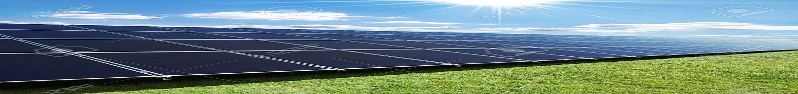
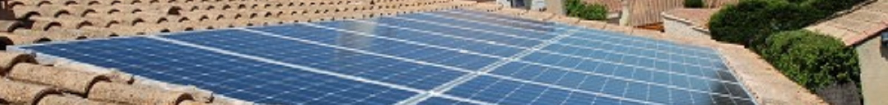

L'histoire du panneau solaire est en fait l'histoire d'une réaction qui se déroule à l'échelle atomique. Cette réaction est appelée l'effet photovoltaïque. L'effet photovoltaïque a été découvert pour la première fois en 1839 par Alexandre Edmond Bequerel, un physicien français. Edmond a constaté que certains matériaux pouvaient produire de petites quantités d'électricité quand ils étaient exposés à la lumière. Albert Einstein se pencha sur ce travail, en 1905, il publie un papier sur le potentiel de production d'électricité à partir de la lumière du soleil. Ce document explore l'effet photovoltaïque, technologie sur laquelle est fondée le panneau solaire. En 1913, William Coblentz a posé le premier brevet pour une cellule solaire, mais il ne pourra jamais la faire fonctionner. En 1916, Robert Millikan a été le premier à produire de l'électricité avec une cellule solaire. Pendant les quarante années suivantes, personne ne fit beaucoup de progrès en énergie solaire car les cellules photovoltaïques avaient un trop mauvais rendement pour transformer la lumière du soleil en énergie. Le premier panneau solaire a été construit en 1954 par les laboratoires Bell. Il a été appelé batterie solaire mais c'était juste un effet d'annonce car il était trop coûteux à produire. Ceux sont les satellites qui ont réellement fait avancer l'énergie solaire dans les années 1960 lors la course à l'espace. Les satellites ont besoin d'une source d'énergie fiable. L'énergie solaire est parfaite car c'est une source d'énergie constante pour les satellites en orbite. L'industrie spatiale mis beaucoup de fonds dans le développement des panneaux solaires. C'était la première utilisation importante de la technologie solaire. Grâce à l'espace, les panneaux solaires ont prouvé leur fiabilité. Le coût de production des cellules solaires a également diminué. L'énergie solaire a eu un second élan au cours de la crise de l'énergie dans les années 1970. Quand le prix du pétrole a augmenté de façon spectaculaire, les panneaux solaires photovoltaïques ont commencé à être utilisé pour la première fois dans les maisons. Depuis les panneaux solaires se sont développés lentement. Pendant longtemps, ils ont été considérés comme des sources d'énergies alternatives. L'énergie solaire est de nouveau en pleine essor car on prévoit une pénurie de pétrole prochaine, on se préoccupe du réchauffement de la planète et les prix de l'énergie n'ont jamais été aussi hauts. L'énergie solaire devient une priorité pour de plus en plus de pays . Des centrales solaires sont en cours de construction dans le monde entier. Les entreprises investissent également. Les entreprises d'électricités et les gouvernements ont offert des subventions et des réductions pour encourager les propriétaires à investir dans les panneaux solaires pour leur maison. De nouveaux types de panneaux solaires ont été développés: panneau solaire très fins( 4 mm d'épaisseur) et flexibles, des peintures solaires. L'objectif est de réduire très fortement le coût de l'énergie solaire. L'énergie solaire est l'énergie du futur.
Un module composé de cellules photovoltaïques transformant l'énergie en tension électrique continue; Un système de montage, également appelé système d'intégration à la toiture qui ancre le panneau photovoltaïque au bâti ; Un abergement qui établit une jonction étanche entre le panneau et le reste de la toiture. À cela s'ajoutent les équipements électriques, et en particulier l'onduleur qui transforme le courant continu en courant alternatif et permet d'alimenter votre maison, ou le réseau public de distribution d'électricité. Le prix d'achat d'un panneau solaire photovoltaïque reste élevé, mais baisse d'année en année. De plus, des aides financières sont disponibles afin de vous aider à assumer le coût de départ.
Les cellules photovoltaïques sont des composants électroniques capables de produire de l'électricité à partir de l'énergie solaire, et ceci grâce à l'effet photovoltaïque. Découvert en 1839 par Antoine Becquerel, ce phénomène est basé sur le comportement des matériaux semi-conducteurs lorsqu'ils reçoivent un rayonnement solaire. En effet, lorsque les photons de la lumière du soleil rentrent en contact avec ces matériaux particuliers, ils transmettent leur énergie aux électrons des semi-conducteurs qui génèrent alors une tension électrique. Le matériau semi-conducteur le plus massivement employé à l'heure actuelle par les fabricants de modules photovoltaïques demeure le silicium.
La quantité d'électricité que peut produire un panneau solaire photovoltaïque lors de son fonctionnement est mesurée par sa puissance crête, une donnée fournie par les constructeurs de panneaux. Elle correspond à la puissance que peut délivrer une installation photovoltaïque, sous des conditions d'ensoleillement (1000 W par m²) et de températures (25°C) optimales. Pour obtenir une estimation de ce que cette technologie peut vous apporter, selon votre situation personnelle et les caractéristiques spécifiques de votre habitation, consultez notre simulateur d'économies d'énergie. Il faut savoir que la puissance réellement émise par un module sera toujours inférieure au chiffre indiqué, puisque son rendement dépendra de nombreux critères : sa localisation, l'efficacité de ses cellules photovoltaïques, sa mise en œuvre, son orientation, sa maintenance, etc. Le choix du rendement des panneaux est donc un critère très important.
Il n'est pas obligatoire de revendre l'électricité produite avec des panneaux solaires photovoltaïques. Vous pouvez si vous le souhaitez la stocker sur place dans des batteries, et la consommer directement pour satisfaire les besoins de votre foyer. Cependant, afin de soutenir cette énergie propre et renouvelable, l'État français a mis en place des tarifs d'achat avantageux pour l'énergie solaire, largement supérieurs au prix de l'électricité que vous payez à l'heure actuelle. En tant que propriétaire, votre intérêt peut donc être de revendre cette énergie solaire à votre fournisseur d'électricité. L’intérêt pour vous est de réaliser de substantielles économies.
La route (ou le parking) photovoltaïque, véritable centrale qui produira de l'électricité par la simple exposition de son revêtement au soleil. Colas, la filiale de travaux routiers du groupe Bouygues, a procédé ce mardi au lancement commercial de cette première mondiale, sous le nom de « Wattway ". En phase d'industrialisation, le revêtement composé de cellules photovoltaïques sera vendu à compter de janvier, au terme de cinq ans de recherche avec l'Institut national de l'énergie solaire (Ines).Ces dalles (comprenant chacune une cellule photovoltaïque classique de 15 centimètres de côté) sont collées à la route existante et recouvertes d'un substrat de résines supportant la circulation des véhicules, y compris les poids lourds. Un véritable millefeuille, étanche et conçu pour ne pas être plus abrasif ou glissant qu'un revêtement routier normal.Un kilomètre de route peut éclairer une ville de 5.000 habitantsLes applications sont multiples : éclairage public, alimentation des affichages lumineux des abribus ou des feux rouges en zone urbaine, ou encore besoins des habitations en zones peu peuplées. Les dalles Wattway, dont le rendement énergétique est proche des panneaux photovoltaïques des fermes solaires, ont été testées avec succès par trois démonstrateurs, dont des entrées de parking, notamment. D'après les estimations de l'ADEME, 4 mètres linéaires de chaussée équipée (soit 20 m²) suffisent aux besoins d'un foyer en électricité (hors chauffage), 15 m2 alimentent les feux d'un carrefour et un kilomètre de route peut éclairer une ville de 5.000 habitants. Wattway peut aussi recharger les véhicules électriques par induction : 100 m2 fournit l'énergie pour rouler 100.000 kilomètres par an, selon l'INES.
La France dispose du cinquième gisement solaire européen. En moyenne, en France, 10m² de panneaux photovoltaïques produisent chaque année 1 031kWh, cette production variant de 900kWh en Alsace à 1300kWh dans la région Provence-Alpes-Côte d'Azur. Outre-mer, ces 10m² produisent 1450kWh. Les technologies actuelles permettraient de couvrir toute la consommation électrique du pays à partir d'une surface de panneaux de 5000km², soit environ la surface qu'occupe aujourd'hui la totalité des côtés sud des toits des bâtiments français. Une maison individuelle en France métropolitaine disposant d'une installation photovoltaïque de 3kW sur son toit produira en moyenne 3000kWh par an, ce qui représente à peu près la consommation d'électricité (hors chauffage et eau chaude sanitaire) d'une famille de 4 personnes.
Depuis 2004 et l’instauration du crédit d’impôt, le marché des installations photovoltaïques connaît une croissance importante. L’augmentation du crédit d’impôt de 40% à 50% en 2005 et, surtout, le tarif d'obligation d’achat, mis en place en juillet 2006, ont permis une montée en puissance du nombre d’installations. Ainsi, la croissance du parc français raccordé au réseau entre 2003 et 2007 a été, en moyenne, supérieure à 100%. 2007 a été véritablement l’année du décollage : 35MW de systèmes supplémentaires, soit plus que l’ensemble des systèmes installés depuis 2000, ont été construits. Le parc cumulé représentait fin 2007 environ 70MW. Les données recueillies grâce à l’enquête 2008 de SER‑SOLER conduisent à une évaluation globale du marché 2008 en France de 104,5 MW, soit une progression de près de 200 % par rapport au marché 2007. Toutefois, cette croissance reste relativement modeste par rapport à celle de nos voisins européens (Allemagne et Espagne), où le rythme d’installations s'élève à près de 1000MW par an.